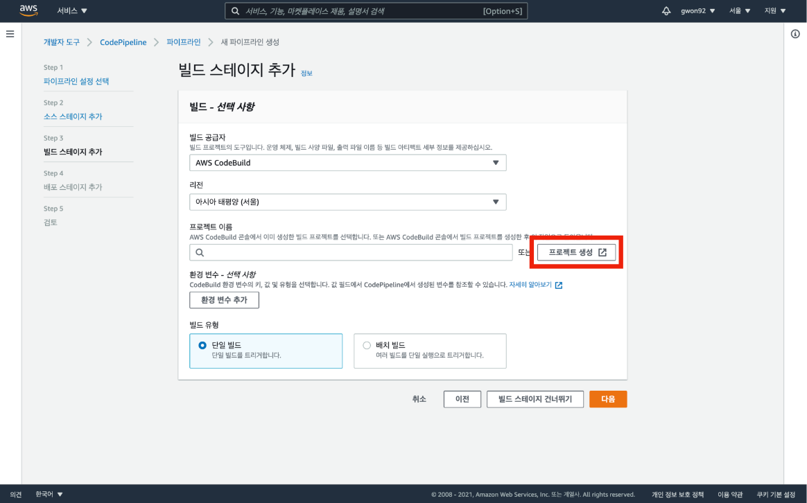

클라이언트 배포 파이프라인 구축
1. buildspec.yml 파일 생성
CodeBuild 서비스를 이용하기 위해서는 buildspec.yml 파일을 생성해야 한다.
소스 코드의 최상위 디렉토리에 buildspec.yml 파일을 생성한 뒤 파일 안의 내용을 링크를 참고하여 작성한다.
변경사항을 저장하고 commit 후 push 한다.
buildspec.yml 파일 생성이 끝나면 본격적으로 배포 파이프라인 구성을 진행한다.
2. 클라이언트 배포 파이프라인 구축
AWS 메인 콘솔 창에서 CodePipeline를 검색하여 CodePipeline 메인 콘솔로 이동한다.
파이프라인 생성 버튼을 클릭한다.
파이프라인 이름을 설정하는데 파이프라인 이름은 100자를 초과하지 않는 선에서 자유롭게 설정하며 설정이 끝나면 다음 버튼을 클릭하여 다음 단계로 넘어간다.
소스 단계에서는 GitHub 레파지토리를 연결한다.
소스 단계를 통해 GitHub 레파지토리에 변경 사항이 생길 경우 자동으로 변경 사항이 파이프라인에 반영된다.
GitHub에 연결 버튼을 클릭한다.
연결 이름을 자유롭게 설정하고 GitHub에 연결 버튼을 클릭한다.
새 앱 설치 버튼을 클릭한다.
자신의 GitHub 계정을 찾아 클릭한다.
Only select repositories 체크 후 Select repositories 토글을 클릭하고 레포지토리를 찾아 선택한다.
선택이 완료되면 Install 버튼을 클릭한다.
생성한 GitHub 앱을 선택한 뒤 연결 버튼을 클릭한다.
레포지토리 이름과 해당 레포지토리의 브랜치를 선택한 뒤 다음 버튼을 클릭한다.
빌드 공급자를 선택 후 다음 버튼을 클릭한다.

프로젝트 생성 버튼을 클릭한다.

프로젝트 이름을 자유롭게 설정한다.
환경 옵션으로 이동하여 환경 이미지를 선택할 시 Ubuntu 운영체제를 선택한다.
이미지 버전을 최신 버전으로 이용하기 위해 이 런타임 버전에 항상 최신 이미지 사용을 선택한다.
로그 파일을 저장하는 서비스로 CloudWatch 혹은 S3를 이용할 수 있다.
CodePipeline으로 계속 버튼을 클릭한다.
모든 과정이 완료되면 다음 버튼을 클릭하여 다음 단계로 이동한다.
배포 스테이지 단계에서는 빌드 과정 후 최종적으로 만들어진 결과물이 전달 및 반영된다.
배포 공급자로 S3를 선택한다.
생성한 버킷 이름을 찾아 선택한다.
배포하기 전에 파일 압출 풀기 옵션을 체크 표시하지 않으면 빌드 결과물이 정상적으로 전달되지 않을 수 있어 배포하기 전에 파일 압출 풀기 옵션을 체크 표시한 뒤 다음 버튼을 클릭한다.
각 스테이지에 필요한 서비스를 선택하는 작업이 끝나면 파이프라인 생성 버튼을 눌러 마무리 작업을 진행한다.

파이프라인 생성이 완료되면 CodePipeline 서비스에서 자동으로 배포 과정을 진행한다.
모든 과정이 성공적으로 진행되면 아래 사진에 보이는 것처럼 초록색 체크 표시가 되어 있는 것을 확인할 수 있다.
생성한 S3 버킷의 엔드포인트 주소로 접속하여 정상적으로 페이지가 보이는지 테스트한다.